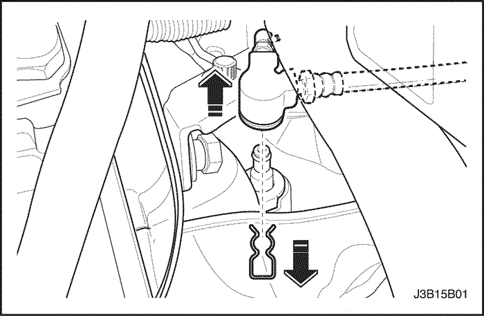
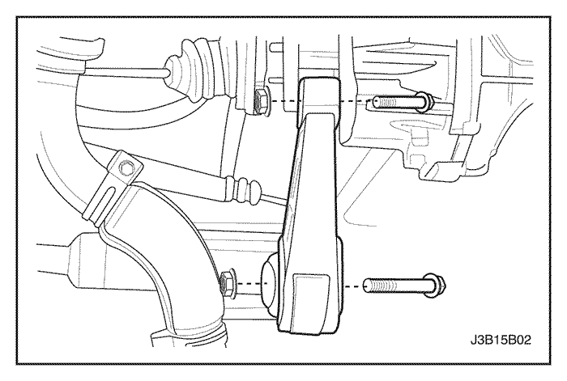
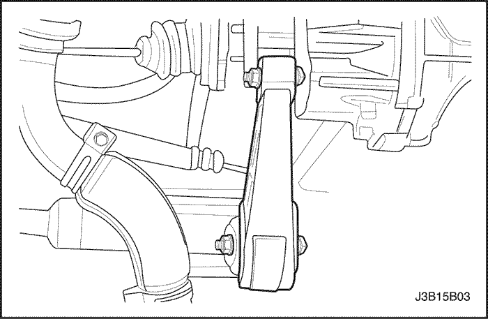
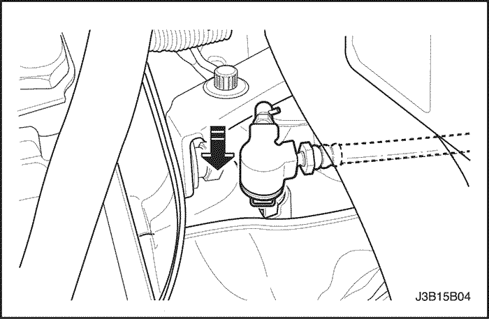

MANTENIMIENTO Y REPARACIÓN
servicio con vehículo en marcha


Comprobar el nivel de líquido
- Con el vehículo sobre una superficie plana y el aceite de la caja de cambios frío, quite el tapón de llenado y compruebe el nivel de aceite. El aceite debe salir por el borde inferior del orificio del tapón.

- Si el nivel es bajo, añada aceite SAE 75W90 para cajas de cambio manuales a través del orificio del tapón de llenado hasta que rebose el aceite.
- Vuelva a montar el tapón de llenado y apriételo firmemente.
- Si el aceite estuviese contaminado, vacíelo tras quitar la tapa del engranaje diferencial.

Ajuste del varillaje de control de cambios
(Indicado para conducción a izquierdas, conducción a derechas similar)
- Desconecte el cable negativo de la batería.
- Coloque la palanca de cambio en punto muerto.
Importante: Con el vehículo parado y desembragado y el motor funcionando, se deben poder seleccionar todas las velocidades fácilmente.
- Afloje el tornillo de fijación de la barra.

- Gire la barra de selección para empujar el pasador de ajuste.

- Desmonte la funda guardapolvo de la consola.
- Tire hacia arriba de la funda guardapolvo para dejar al descubierto el mecanismo de la palanca de mando del cambio.
- Coloque la palanca de cambio a la izquierda de la posición de punto muerto.
- Inserte un pasador de retención de 5 mm (0,2 pulgadas) en los taladros para alinear la palanca de cambio con su alojamiento.
- Apriete el tornillo de fijación de la barra.
Apretar
Apriete el tornillo de fijación de la barra hasta 14 N•m (124 lb-pulg.).

- Gire la barra de selección para liberar el pasador de ajuste.
- Quite el pasador de retención de 5 mm (0,2 pulgadas) de la palanca de cambio.
- Coloque la funda guardapolvo en la consola.
- Conecte el cable negativo de la batería.

Palanca de cambio de marchas
(Indicado para conducción a izquierdas, conducción a derechas similar)
Procedimiento de desmontaje
- Desconecte el cable negativo de la batería.
- Coloque la palanca de cambio en punto muerto.
- Separe la funda guardapolvo de la tapa de la consola.
- Levante la tapa de la consola para dejar al descubierto el mecanismo de la palanca de mando del cambio.

- Gire la sujeción del tope de la palanca de cambio y retírela.
- Desmonte la palanca de cambio de su eje.
procedimiento de montaje
- Monte la palanca de cambio en su eje.
- Monte la sujeción del tope de la palanca de cambio.
- Gire la sujeción del tope de la palanca de cambio para sujetarla.
- Baje la funda guardapolvo y acóplela a la tapa de la consola.
- Conecte el cable negativo de la batería.

Alojamiento de la palanca de cambio de marchas
(Indicado para conducción a izquierdas, conducción a derechas similar)
Procedimiento de desmontaje
- Desconecte el cable negativo de la batería.
- Quite la abrazadera de la barra. Consulte el apartado "Ajuste del varillaje de cambio" en esta sección.
- Desmonte la consola.
- Quite los tornillos del alojamiento de la palanca de cambio y desmonte dicho alojamiento.

procedimiento de montaje
- Monte el alojamiento de la palanca de cambio con sus tornillos.
Apretar
Apriete los tornillos del alojamiento del cambio hasta 7 N•m (62 lb-pulg.).
- Ajuste el varillaje de cambio.
- Monte la consola.
- Conecte el cable negativo de la batería.

Engranaje arrastrado del velocímetro
Procedimiento de desmontaje
- Desenchufe el conector eléctrico del sensor de velocidad del velocímetro.

- Quite el tornillo de retención del alojamiento del velocímetro.
- Desmonte el piñón conducido del velocímetro y el alojamiento del velocímetro.

procedimiento de montaje
- Recubra la junta tórica con vaselina.
- Monte el engranaje conducido y el alojamiento del velocímetro.
- Coloque el tornillo de retención del alojamiento del velocímetro.
Apretar
Apriete el tornillo de retención del alojamiento del velocímetro hasta 4 N•m (35 lb-pulg.).
- Enchufe el conector eléctrico del sensor de velocidad del velocímetro.

Conjunto de varillaje de control de cambios
Procedimiento de desmontaje
- Desconecte el cable negativo de la batería.
- Quite la abrazadera de la barra. Consulte el apartado "Ajuste del varillaje de cambio" en esta sección.
- Quite el clip y el tornillo de la junta cardán.
- Separe la junta cardán de la caja de cambios.

- Quite el pasador del eje de fijación y separe la pieza de conexión del varillaje del soporte de fijación trasero de la caja de cambios.
- Desmonte el conjunto del varillaje de cambio.
procedimiento de montaje
- Monte el conjunto del varillaje de cambio.
- Coloque el pasador del eje de fijación y una la pieza de conexión del varillaje al soporte de fijación trasero de la caja de cambios.
- Monte la junta cardán en la caja de cambios.
- Coloque el clip y el tornillo de la junta cardán.
- Coloque la abrazadera de la barra. Consulte el apartado "Ajuste del varillaje de cambio" en esta sección.
- Ajuste el varillaje de cambio. Consulte el apartado "Ajuste del varillaje de cambio" en esta sección.
- Conecte el cable negativo de la batería.

Junta hermética de eje rotativo
Herramientas necesarias
Instalador de anillos KM-519
Procedimiento de desmontaje
Aviso: Procure no causar daños al anillo de ajuste del cojinete al hacer palanca con la barra.
- Desmonte el árbol de transmisión de la caja de cambios. Consulte la Sección 3B, Árbol de transmisión de la caja de cambios manual.
- Desmonte la junta del árbol de transmisión levantando el labio exterior de la junta con una palanqueta.

procedimiento de montaje
- Monte la nueva junta del árbol de transmisión con el instalador de anillos KM-519 y un martillo.
- Recubra el labio de la junta con aceite de la caja de cambios.
- Monte el eje de accionamiento. Consulte la Sección 3B, Árbol de transmisión de la caja de cambios manual.
Conjunto de transeje
Herramientas necesarias
Fijación del soporte del motor J-28467-B
Procedimiento de desmontaje
- Instale la fijación del soporte del motor J-28467-B.
- Desmonte la batería y la bandeja portabatería. Consulte la Sección 1E, SISTEMA ELÉCTRICO DEL MOTOR.
- Desmonte el conjunto del varillaje de cambio. Consulte el apartado "Conjunto del varillaje de cambio" en esta sección.
- Desmonte el palier. Consulte la Sección 3B, Árbol de transmisión de la caja de cambios manual.

- Desenchufe el conector eléctrico del interruptor de la luz de marcha atrás.
- Desenchufe el conector eléctrico del sensor de velocidad del velocímetro.

- Quite el pasador y desmonte el tubo del cilindro de desembrague.

- Quite el tornillo y la tuerca de conexión del bloque amortiguador.
- Quite los tres tornillos del soporte de fijación trasero.
- Desmonte el soporte de fijación trasero de la caja de cambios.

- Quite los dos tornillos de retención del bloque amortiguador trasero.
- Desmonte el bloque amortiguador trasero del travesaño delantero.

- Quite los dos tornillos de retención de la jaula.
- Quite los tres tornillos del soporte de fijación superior de la caja de cambios.
- Desmonte el soporte de fijación superior y la jaula.

- Quite los tres tornillos de retención superiores de la caja de cambios.

- Apoye la caja de cambios sobre un gato de sustentación.

- Quite los siete tornillos de retención inferiores de la caja de cambios.

- Desmonte la caja de cambios.
Aviso: Apoye la caja de cambios sólo en posición vertical.
- Separe la caja de cambios del bloque del motor, deslizándola lateralmente.
- Baje la caja de cambios.
procedimiento de montaje
- Apoye la caja de cambios sobre un gato de sustentación.
- Monte la caja de cambios introduciendo el eje primario de la misma en el disco del embrague y deslizándola lateralmente dentro del bloque del motor.

- Coloque los siete tornillos de retención inferiores de la caja de cambios.
Apretar
Apriete los tornillos de retención inferiores (a) de la caja de cambios hasta 73 N•m (54 lb-pie).
Apriete el tornillo de retención inferior (b) de la caja de cambios hasta 31 N•m (23 lb-pie).
Apriete los tornillos de retención inferiores (c) de la caja de cambios hasta 21 N•m (15 lb-pie).

- Coloque los tres tornillos de retención superiores de la caja de cambios.
Apretar
Apriete los tornillos de retención superiores de la caja de cambios hasta 73 N•m (54 lb-pie).

- Coloque el tornillo de retención de la jaula y monte ésta.
- Coloque los tres tornillos del soporte de fijación superior de la caja de cambios y monte el soporte.
Apretar
Apriete los tornillos de retención del soporte de fijación superior de la caja de cambios hasta 48 N•m (35 lb-pie).

- Coloque los dos tornillos de retención del bloque amortiguador trasero.
Apretar
Apriete los tornillos de retención del bloque amortiguador trasero hasta 68 N•m (50 lb-pie).
- Monte el bloque amortiguador trasero en el travesaño delantero.

- Coloque los tres tornillos del soporte de fijación trasero y monte el soporte.
Apretar
Apriete los tornillos del soporte de fijación trasero hasta 90 N•m (66 lb-pie).
- Coloque el tornillo y la tuerca de conexión del bloque amortiguador.
Apretar
Apriete el tornillo y la tuerca de conexión del bloque amortiguador hasta 68 N•m (50 lb-pie).

- Conecte el tubo del cilindro de desembrague.
- Enchufe el conector eléctrico del sensor de velocidad del velocímetro.
- Enchufe el conector eléctrico del interruptor de la luz de marcha atrás.
- Retire la fijación del soporte del motor J-28467-B.
- Monte el palier. Consulte la Sección 3B, Árbol de transmisión de la caja de cambios manual.
- Monte el conjunto del varillaje de cambio. Consulte el apartado "Conjunto del varillaje de cambio" en esta sección.
- Monte la batería y la bandeja portabatería. Consulte la Sección 1E, SISTEMA ELÉCTRICO DEL MOTOR.
- Compruebe el nivel de aceite. Consulte el apartado "Comprobación del nivel de aceite" de esta sección.
 | |  | |
| © Copyright Chevrolet Europe. Reservados todos los derechos |